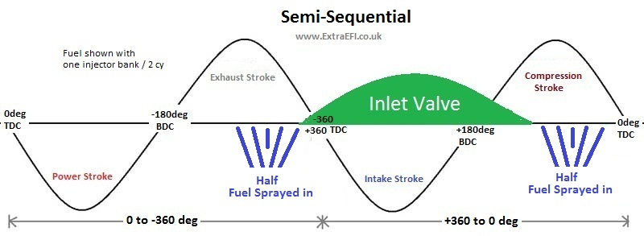
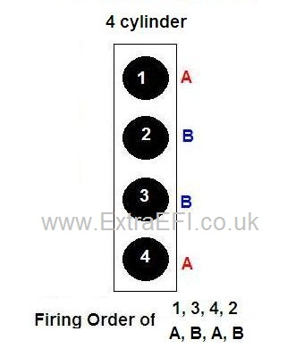

Note: All my MS2-Extra ECU's can run semi-sequential (Option 1) as long as you have a crank signal like 36-1 or 60-2, etc. Mods are only needed for Fully Seq or Option 2 on 6 and 8 cy engines.
PLEASE SEE THE MS2X Option FOR MORE ON MS2 SEQUENTIAL FUELING HARDWARE
Before you start this please read the Sequential Fueling page here first, as it has important information on it that you need to read and understand!
OK, now hopefully you know what sequential fueling is all about, so we can move onto the settings using Tuner Studio:
Start by Looking under Basic Load Settings - Engine and Sequential Settings (Note, don't get confused with Injector Sequence)
This brings up the following table:
Sequential Injection:
Here you can turn on the sequential function. UnTimed is OFF (normal function). It should be noted that Siamese mode, for Siamese ported engine like the British Leyland B series, and Staged Mode won't be discussed here as it is rather complex and a specialist subject
Timing Trigger:
This is when you want the fuel to be added in relationship to the angle you have set. Usually this is set to End-of-Pulse as that's easiest to work out with varying PW's, but you can have it so the fuel starts at a certain angle or that the fueling PW ends at the set angle (Start-of-pulse), or even so the PW is timed for being in the middle of the angle (Mid-Pulse).
Fixed timing or Table:
The fixed timing has no trim for engine speed or load, it simply uses the Fixed Injection Timing Angle for all conditions. If you select the table you can then adjust the angle with load and engine speed, much like the spark map, this is a 6x6 map. See below for the table.
Fixed Injection Timing:
This is the angle for fueling when not using the table.
(Most applications will gain from using the table).
Cranking Injection Timing:
The angle that is used for crank fueling as some engines may benefit from firing fuel when the inlet valve is open during cranking.
VE Trim Tables:
This should be the final tuning stage if you have EGT and really know what your doing. It allows you to tune the fueling for each injector with it's own 16x16 trim table. The tables allow a +-12.4% adjustment from the main VE table. See the EGT Tuning Page for more on this.
Injector Drivers:
Standard Drivers means the 2 on board outputs, which are for Semi-Seq on a 4cy or Option 1 on a 6 or 8cy. See Below. Additional Drivers are if you are going fully sequential on a 4 cylinder or semi-sequential Option 2 on a 6 or 8cy, then you'll need an additional board with one or two Injector Banks for driving all of the injectors.
See Below.
Note: When the additional board is used you can have different Injector Characteristics, i.e. opening times, etc if you are using different style injectors on each bank. This would be rare to be honest. To set these up you must first select Specific Bank 2 ON in the Injector characteristics page, under Basic Setup.
|
|
Timing Table for the Fueling Angle when selected in the above settings:
This allows for adjustments to compensate for air speed and load.
Note: Do NOT jump too far in one go, limit the difference between sites to 100 at max to avoid stumbles.
General opinion is that the fuel needs to be delivered earlier as RPM increases, due to intake air and engine speed. A rule of thumb is 40deg for every increase of 1000rpm up to around 4000-5000rpm. At high RPM the PW's are usually so long that timing is no longer critical and air speed is also much higher, so any gains are minimal as rpm increases. In the above example the inlet valve opens at approx -340deg.
There are several methods of tuning the angle for the optimum setting, none of them will beat a rolling road tune. If you don't want to use a rolling road then several people tune at idle for the max AFR reading (richest point) where the theory is that this will be the angle that max mixture of the air/fuel occures. I have tried this method and couldn't really notice any change in AFR. Another method is to tune for the smoothest idle, I found -250 to -300 worked best for my RV8 on the EFI intake. I then adjusted the rest of the table so that every increase in 1000rpm the firing angle was +40 deg earlier up to 4000rpm. (+20deg / 500RPM)
Hardware Setup:
Semi-Sequential:

4 Cylinder Semi-Seq:
(No hardware changes for 4cy engines)
The MS ECU fires each pair of cylinders with half the required amount of fuel every crank rotation, remembering that a 4 stroke engine only needs fuel once per two crank rotations. This needs the 2 Injector banks wired so Bank 1 is connected to cy1 and it's pair, then Injector Bank 2 connects to the other pair of cylinders.
Note: For MS2-Extra you will need to set the Engine Constants for 2 squirts/engine cycle and Simultaneous Injection to keep the req_fuel correct.
So a firing order of 1,3,4,2 connect Injector Bank1 (A) to cylinders 1+4, Injector Bank 2 (B) to cylinders 3+2.

6 Cylinder Semi Seq:
i) Option 1 (No hardware changes needed) This is different to the above as it will only squirt using the MS ECU's Injection Bank 1. This is because we only have two injector banks as standard and firing 3 pairs with 2 banks doesn't work out. So we fire all 6 at a rate of 3 times/crank revolution, a sixth of the required fuel, 6 times/engine cycle.
This means wiring all 6 injectors to Injection Bank 1.
Note: For MS2-Extra you will need to set the Engine Constants for 6 squirts/engine cycle and Simultaneous Injection to keep the req_fuel correct.
ii) Option 2 needs another injector driver adding to the ECU, this I can do when building the MS ECU if you specify it to me. This then gives you three banks of injectors that can be fired in pairs at a specific crank angle during their stroke (once per crank rev/twice per engine cycle).
This means wiring the three Injection Bank outputs to pairs of cylinders. Firing order 1 - 5 - 3 - 6 - 2 - 4 would be wired Bank1 - 1+6, Bank2 - 5+2, Bank3 - 3+4
Note: For MS2-Extra you will need to set the Engine Constants for 2 squirts/engine cycle and Simultaneous Injection to keep the req_fuel correct.
8 Cylinder Semi Seq:
i) Option 1 (No Hardware changes) Like the 4 cylinder engines, but a quarter of the required fuel is squirted in twice per crank revolution (every 180deg) and it uses both Injection Banks on the MS ECU.
This means wiring the two Injector Banks so that output Bank 1 connects to 1,4,6,7 and Bank 2 to 8,3,5,2 for a firing order of 1,8,4,3,6,5,7,2
Note: For MS2-Extra you will need to set the Engine Constants for 4 squirts/engine cycle and Simultaneous Injection to keep the req_fuel correct.
ii) Option 2 needs another two injector drivers adding to the MS ECU, this I can do when building the MS ECU if you specify it to me. This then gives you 4 banks that can fire the injectors in pairs at a specific angle during their stroke. (once per crank rev/twice per engine cycle)
This means wiring the four Injection Bank outputs to pairs of cylinders. Firing order 1,8,4,3,6,5,7,2 would be wired Bank1 - 1+6, Bank2 - 8+5, Bank3 - 4+7, Bank4 - 3+2
Note: For MS2-Extra you will need to set the Engine Constants for 2 squirts/engine cycle and Simultaneous Injection to keep the req_fuel correct.
Fully Sequential:
(Cam sensor needed and only works for 4cy using MS2-Extra)
Some mods will be needed to the MS ECU unless you purchase it ready for this from myself!
This allows you to fire all of the required fuel for each independant cylinder at a specific time during the cycle of the piston. This means wiring each injector back to the MS ECU so that the controller can fire them singularly at a specified time witin the engine cycle. This setup would need a crank signal (EDIS 12 pinned modules and distributor setups won't work) as well as a cam signal for the ECU to work out which cylinder is on its compression stroke, etc.
Note: For MS2-Extra you will need to set the Engine Constants for 1 squirt/engine cycle and Simultaneous Injection to keep the req_fuel correct.

PLEASE SEE THE MS2X Option FOR MORE ON THE MS2 SEQUENTIAL FUELING HARDWARE
See the EGT Tuning Page for more on this subject.